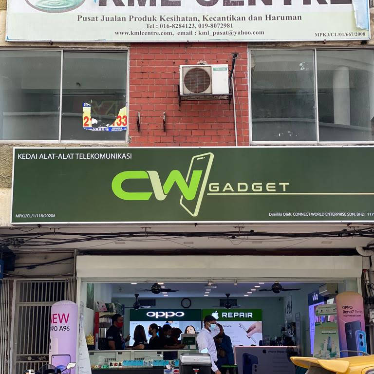
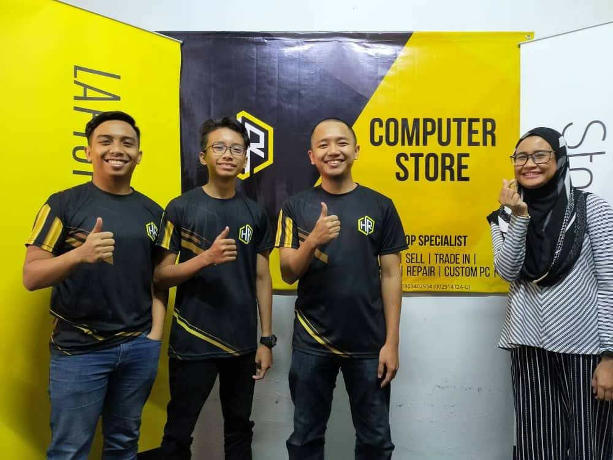

Working Experience
December 2018 - Connect World Gadget
This is my first working experience in my lifetime. This is when I was 16 during the school holiday at the end of the year. I just tried my luck and calling every smartphone store that doesn't have a proper social media pages and offered to help them with that. At this time, I didn't really know what I was doing but I successfully build them an official Instagram account with a sizeable amount of followers in a short period of time.
January - March 2020 - Hakim Raspberry Computer Store
During my time here, I've learnt a lot of experience in the industry where I picked up some notes and tips from my employer since the company is still in the baby stage. I was one of the first employee hired and this makes me involved in a lot of the process all the way from how to treat a customer and meeting their needs and how to do follow ups post-services. This is also where I expand my knowledge in technology where I dip my those in the process of repairing devices like laptops and computers alike. Making mistakes along the way really shapes me into the person that I am right now.